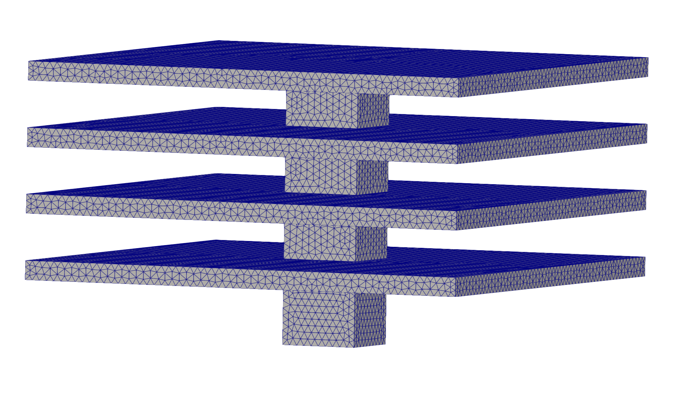
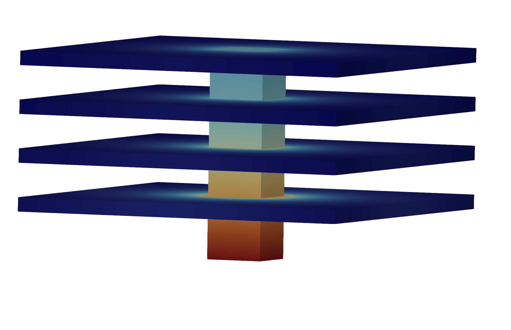

.pdf
.pdf
M2 thermal-fin MLOps mini-project — complete workflow
1. Engineering purpose: from simulation to decision
A validated 3D finite-element model can answer one thermal question accurately, but it is too expensive to run interactively hundreds or thousands of times. Engineering work rarely asks for only one result: teams must explore a design space, quantify sensitivity, compare operating conditions, satisfy constraints and justify a final decision. This project turns a high-fidelity simulation into a reusable decision tool.
Automation is essential because a parameter study is more than a loop around the solver. Each sample may require a new geometry and mesh, a consistent model configuration, an HPC job, convergence checks, extraction of the same quantity of interest and complete provenance. A workflow makes these steps repeatable, restartable and auditable; it also prevents manual file handling, failed jobs or inconsistent post-processing from silently corrupting the learning dataset.
The surrogate model then approximates the expensive mapping \(\mu \mapsto S(\mu)\). Once validated, it can evaluate a new configuration almost instantly. This enables:
-
interactive exploration of geometric and operating parameters;
-
sensitivity analysis and uncertainty studies over many configurations;
-
design optimisation under thermal and geometric constraints;
-
rapid operational decisions, monitoring and digital-twin applications;
-
verification of promising candidates with selected high-fidelity simulations instead of exhaustive 3D computation.
The same engineering pattern applies well beyond this heat sink: heat exchangers and battery cooling, aerodynamics and fluid systems, structural mechanics, electromagnetics, manufacturing processes, biomedical models and any application where a trusted simulation is accurate but too costly for real-time inference or optimisation.
The learning objective is therefore not merely to train a regression algorithm. It is to engineer the complete, trustworthy chain from parameter definition to HPC execution, scientific data, validated surrogate, inference and decision.
2. M2 MLOps mini-project
This M2 mini-project uses machine-learning operations and reproducible workflows to learn from a 3D thermal-fin model. Sample the prescribed parameters, generate the cases and meshes, run Feel++ on Gaya using Slurm and Apptainer, assemble a dataset, train a regression model, and verify inference against held-out and new Feel++ simulations. The complete workflow, not only an isolated simulation or a model-training notebook, is the deliverable.
A technically competent third party should be able to clone the repository, follow the documented procedure, reproduce the environment and execute the pipeline.
The project language is English. Repository content, source-code documentation, issues, pull requests, reviews, presentation slides and the oral presentation must all be written or delivered in English.
Each team works in the private GitHub repository provisioned by the teaching team. Do not make the repository public or publish a public copy of its code, data, results or discussions.
The teaching team confirms groups, dates, resource budget, parameter bounds and numerical/ML tolerances. Start with session 2, which is a preparation and validation exercise. The thermal-bridge pages are background references; they do not define a second MLOps project.
3. Project specifications
The requirements for this project are:
-
use the thermal-fin generator to produce 3D cases and meshes;
-
use a central post with four fins throughout the campaign; the other generator settings not listed below remain fixed and documented;
-
vary exactly three inputs: fin length
L, fin thicknesstand the Biot numberBi.Landtare geometric design parameters;Biis the prescribed operating/design parameter. Do not replace these inputs with conductivity, fin spacing or another geometry parameter; -
keep all material properties fixed for the entire campaign. Use the default
Materialsand conductivity definitions in the JSON produced by the pinned Python generator; do not sample or hand-edit these properties from one case to another; -
use the prescribed heat flux supplied by the teaching team as the reference flux. In the nondimensional problem this becomes the unit incoming root flux; record the dimensional reference value and units when they are provided;
-
define the quantity of interest as the mean temperature on the heated CPU/post root (the designated root boundary/marker), with its nondimensional convention and averaging measure stated explicitly. It is not a volume average over the whole solid;
-
split the sampled cases into disjoint training, validation and test sets. The test set is not used for model selection or fitting, and at least one independent test case must be checked again with the finite-element solver;
-
each team chooses one learning method. A method may be developed by only one team, so register the choice with the teaching team before implementation. Possible choices include a neural network, gradient boosting, random forest, Gaussian process or polynomial chaos regression.
The number of samples is a design decision: propose it from the three-dimensional parameter domain and available Gaya budget, justify the sampling strategy and seed, and obtain approval before launching the full campaign. A small smoke campaign is required first; it does not count as the final training/test dataset unless explicitly approved.
4. Physical problem and geometry
The geometry is a central post connected to four horizontal fins. The CPU heats the lower face of the post. Heat is conducted through the solid post and fins, then rejected from the surfaces exposed to the ambient air. The project solves the thermal conduction problem only; it does not resolve the airflow.
The model below is the direct 3D extension of the 2D thermal-fin problem. The differential equations and interface conditions are unchanged. In 3D, the subdomains \(\Omega^i\) are volumes, the root and exterior boundaries \(\Gamma\) are surfaces, and the integrals use volume or surface measures.
The two views below connect the mathematical model to the numerical objects handled by the workflow. The mesh is the discretized 3D domain supplied to the finite-element solver; the temperature field is the corresponding solution used for physical inspection. Both must be retained for traceability, while the learning dataset uses the scalar root-temperature functional defined below.
 Figure 1. 3D tetrahedral mesh of the post and four fins
Check the geometry, mesh quality and physical boundary markers before launching the parameter campaign. A valid mesh is required for every sampled pair \((L,t)\). |
 Figure 2. Nondimensional 3D temperature field
Heat enters through the CPU/root, diffuses through the post and fins, and is rejected to ambient air through the Robin boundaries. The full field supports verification; the boundary average \(S(\mu)\) is the quantity learned by the surrogate. |
4.1. Domain decomposition
For the geometric parameters \(\mu_g=(L,t)\), let \(\Omega^0(\mu_g)\) denote the central post and \(\Omega^i(\mu_g)\), \(i=1,\ldots,4\), the four fins. The complete solid is
The post-fin interfaces, heated root and exposed boundaries are
Each material conductivity \(k^i\) is nondimensionalized by the post conductivity, so \(k^0=1\). Unlike the original reduced-basis exercise, the present campaign does not use material properties as parameters. Preserve the default Materials and conductivity definitions generated in each JSON file and vary only \(L\), \(t\) and \(\mathrm{Bi}\). The generator revision and resulting JSON remain the source of truth for the fixed values.
4.2. Nondimensional strong problem
For \(\mu=(L,t,\mathrm{Bi})\), find the steady nondimensional temperature \(u(\mu)\) whose restriction \(u^i\) to each subdomain satisfies
There is no volumetric heat source: heat enters through the CPU/root boundary. At every post-fin interface, temperature and normal conductive flux are continuous. If \(n_i\) points from the post into fin \(i\),
Using the outward normal \(n^0\) on the heated root, the normalized incoming heat flux is imposed by the Neumann condition
The sign represents heat entering the solid because the normal points outward. On every surface exposed to air, convection is represented without solving the airflow:
This Robin condition uses a nondimensional ambient temperature equal to zero. Before assigning Celsius or physical-length units, the temperature, length and heat-flux reference scales must be supplied.
4.3. Weak finite-element statement
Equivalently, find \(u(\mu)\in H^1(\Omega(\mu_g))\) such that
with
A conforming global \(H^1\) discretization enforces temperature continuity; the piecewise conductivity and variational balance enforce flux conservation across the interfaces.
The quantity of interest is the mean nondimensional root temperature,
It is a surface average on the heated CPU/post root, not a volume average over the whole solid and not an unweighted average of mesh nodes. Lower values indicate better thermal performance under the normalized input flux.
5. Parameter-to-response mapping
Let the parameter vector be
where \(L\) is the fin length, \(t\) its thickness and \(\mathrm{Bi}\) the nondimensional operating/design parameter describing the exchange with the ambient. For each \(\mu\), the finite-element workflow generates a 3D case and computes the scalar functional
The learning task is to construct a surrogate \(\widehat{S}(\mu)\) of this mapping. The dataset therefore contains parameter vectors, provenance and the corresponding value of \(S\); it is not a dataset of unrelated images or fields. The 3D temperature field remains available for physical interpretation and verification.
5.1. Add the quantity of interest to the generated JSON
The Python generator already writes a PostProcess.heat.Exports section for the temperature field, partition identifier and mesh marker. It does not add the scalar output required by this project. After generating each case, extend the same PostProcess.heat object with a named statistics measure:
"PostProcess":
{
"use-model-name": 1,
"heat":
{
"Exports":
{
"fields": ["temperature", "pid", "marker"]
},
"Measures":
{
"Statistics":
{
"mean_root_temperature":
{
"type": "mean",
"field": "temperature",
"markers": "Gamma_root"
}
}
}
}
}According to the Feel++ statistics-measure documentation, mean computes the integral of the selected field divided by the measure of the selected marker. Consequently, this entry computes the surface average \(S(\mu)\) on Gamma_root; it is not an arithmetic mean of mesh-node values.
The measure is written to the Heat measures CSV after a stationary solve. Expect a column derived from the measure name, typically Statistics_mean_root_temperature_mean, but inspect and record the actual CSV header produced by the Feel++ release used on Gaya. Collection must fail clearly if the column is missing, duplicated, non-finite or associated with an unsuccessful solver run.
Before launching the campaign, verify on one reference case that:
-
Gamma_rootexists and denotes the heated CPU/post surface; -
the measure appears in the CSV and has one finite value;
-
the same value is obtained within tolerance in the validated one-rank and four-rank runs;
-
changing the geometric or
Biinput changes the resolved case while the generated material properties remain fixed.
6. Final application: rapid operational or design optimization
Once \(\widehat{S}\) has been validated, use it as the last stage of the workflow for rapid exploration. In a design study, search the admissible parameter domain for the configuration that minimizes the base temperature under the prescribed heat load:
The constraints, objective and heat-flux convention must be stated explicitly; another valid objective could maximize heat removal or impose a temperature limit. In an operational study, hold the chosen geometry fixed (for example \(L\) and \(t\)) and optimize only the permitted operating parameter(s), or find the admissible configuration meeting a target temperature. The temperature \(S(\mu)\) is normally the output/quantity of interest, not an input parameter; if a target temperature is prescribed, it must be identified as an additional constraint. Every proposed optimum must finally be checked by a new finite-element simulation, not only by the surrogate.
7. Expected architecture
repository/
├── README.adoc
├── pyproject.toml
├── requirements.lock
├── config/ # L, t, Bi domain, flux, sampling, solver and training
├── cases/template/ # versioned CFG/JSON/geometry
├── src/thermal_surrogate/ # prepare, submit, collect, dataset, train, predict
├── slurm/ # single-job/array templates and resource settings
├── containers/ # simulation image record and ML definition
├── data/README.adoc # provenance, schema, retrieval and split IDs
├── tests/fixtures/ # small recorded solver outputs
├── artifacts/ # generated, externally preserved, ignored in Git
├── .github/workflows/ci.yml
└── docs/ # experiments, verification, reproduction recordCommit source, tests, configs, case templates and small fixtures. Keep SIFs, large fields/datasets, model artifacts and tracking stores in documented storage with checksums and retention. Do not ignore the only copy without a retrieval/recreation procedure.
8. Required pipeline interface
The following is an interface students implement, not a pre-existing package in this teaching repository. Equivalent documented commands are acceptable:
python -m thermal_surrogate.prepare --config config/campaign.json --output work/campaign
python -m thermal_surrogate.submit --manifest work/campaign/manifest.json
python -m thermal_surrogate.status --manifest work/campaign/manifest.json
# Wait for required jobs and scientific validation before collection.
python -m thermal_surrogate.collect --manifest work/campaign/manifest.json --output data/dataset.csv
python -m thermal_surrogate.train --config config/training.json --data data/dataset.csv --output artifacts/model
python -m thermal_surrogate.predict --model artifacts/model --input data/test-parameters.csv --output artifacts/predictions.csv
python -m thermal_surrogate.verify --predictions artifacts/predictions.csv --reference data/test-reference.csv
python -m pytestPreparation writes one 3D generated case/mesh per sample and stable IDs. Submission/status records job IDs and attempts. Collection accepts only complete, valid runs and extracts mean_root_temperature. Training keeps preprocessing within the fitted model pipeline and logs configuration, dataset/split identity, metrics and artifacts in MLflow. Prediction must not rerun training. Verification compares predictions with matching Feel++ sample IDs and the documented nondimensional convention.
Use a single reproducible driver or documented stage commands with restart/resume semantics. Demonstrate the equivalent containerized ML commands and the actual Slurm simulation script.
9. GitHub workflow
issue → branch → commits → PR → CI → review → merge → closed issue
Use acceptance criteria, labels, milestones and a Project board. Each student provides identifiable implementation and review evidence. CI runs inexpensive fixtures/tests; real Gaya execution is recorded separately. Follow the collaboration lab.
Team coordination must be visible in GitHub. Use issues to assign work, discuss technical decisions and record acceptance criteria; use pull requests and reviews for implementation and verification. Private conversations may help resolve a question, but they do not replace the English issue or review that records the resulting decision.
10. Milestones
| Stage | Deliverable | Acceptance evidence |
|---|---|---|
1. Deploy Feel++ |
Single preflighted heat case, SIF/case hashes, Slurm script, persistent outputs. |
Successful job and solver checks; repeat-run comparison; explain mounts/resources. |
2. Produce the dataset |
Seeded design in |
Small smoke campaign; failure/retry handling; schema/units/provenance; expanded budget agreed. |
3. Learn the response |
Frozen train/validation/test splits, a baseline and the registered team method, with MLflow comparison. |
Train-only preprocessing; validation-based selection; final held-out error metrics in temperature units; no method duplicated across teams. |
4. Infer and verify |
Packaged predictor, tests/CI and independent verification set. |
Reload without retraining; compare with Feel++ references; investigate worst errors and mesh sensitivity. |
5. Reproduce |
Artifact retrieval, complete instructions and partner reproduction evidence. |
Clean-checkout demonstration of the pipeline, with HPC access/resource prerequisites explicit. |
11. Deliverables
There is no separate written project report. Submit the following, entirely in English:
-
a tagged repository containing the source code, tests, configuration, workflow definitions and concise technical documentation needed to execute and reproduce the pipeline;
-
links to the issues, branches, pull requests, reviews and CI runs that demonstrate each student’s implementation and review contributions;
-
the simulation inputs, manifests and job logs; the versioned dataset and frozen splits; the experiment comparison and selected model; batch predictions, verification outputs and the final optimization check;
-
the identities of the simulation and learning environments, plus documented locations and checksums for every external artifact;
-
an oral presentation, supported by English-language slides delivered as a PDF file, explaining the engineering objective, physical model and quantity of interest, automated workflow, dataset, learning method, validation results, limitations and final optimization. Commit the final PDF to the tagged repository. Both students must present and be able to answer questions about the complete workflow.
The repository README and technical documentation are operational documentation, not a narrative report. They must state how to reproduce the work, identify individual contributions, disclose any permitted AI use and record the partner reproduction check.
12. Assessment
-
Scientific validity: 3D four-fin setup, parameter semantics, solver convergence, correct mean-root-temperature extraction, leakage-free evaluation and justified error tolerance.
-
HPC operation: Slurm/Apptainer use on Gaya, appropriate resource requests, isolated outputs and traceable failures/retries.
-
Engineering: automated/resumable stages, meaningful tests, CI, packaging and artifact handling.
-
Reproducibility/collaboration: independent handoff, focused PRs, reviews and contribution evidence.
-
Oral presentation: clear English explanation of the complete workflow, justified results, limitations and shared command of the project by both students.
-
Individual understanding: explain a dataset row back to its Feel++ run; modify an input safely; diagnose a failed job; defend a prediction and its limits.
A low prediction error alone is insufficient. Project work may use AI under the announced mode; live individual checks can use another mode. See course competencies.
13. Reproducibility checklist
-
The 3D/four-fin configuration, heat-flux value,
(L, t, Bi)domain, units, seed, sample IDs and complete generated inputs/meshes are recorded. -
Feel++ SIF, case template, mesh/solver settings and ML environment are identified and retrievable.
-
Every accepted row traces to a verified simulation; failures/retries are accounted for.
-
Dataset checksum and disjoint grouped train/validation/test IDs are frozen.
-
Training/evaluation is automated and tracked; inference reloads the selected artifact.
-
Held-out and new verification predictions are compared with matched Feel++ results using agreed tolerances.
-
Tests/CI cover failures and fixtures; real HPC validation evidence is distinguished.
-
A partner reproduces the procedure with the documented Gaya access, resources and artifact locations.
Carry these practices into the M2 semester project.